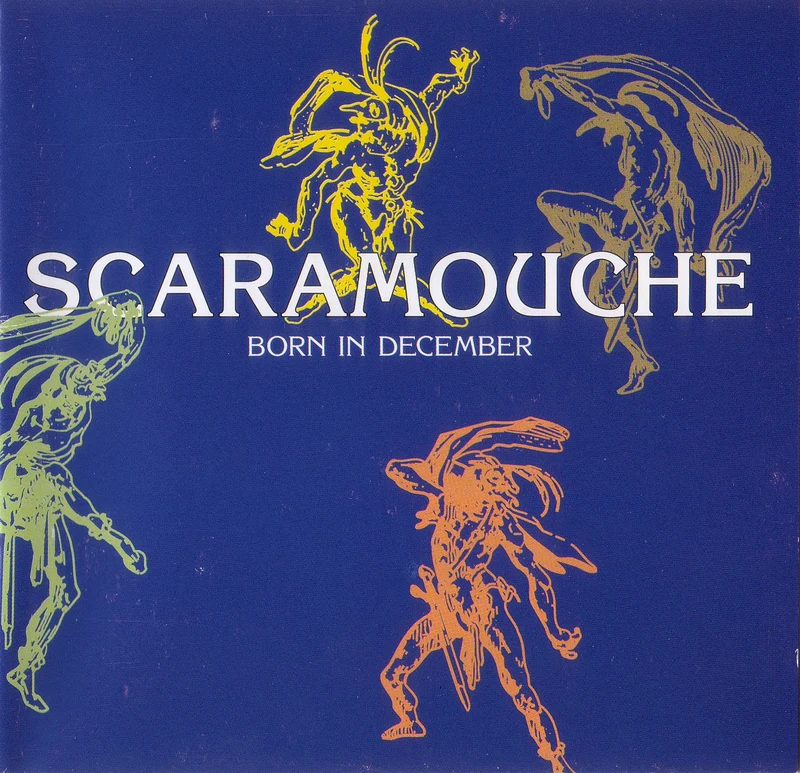
1995 · Warner Music
Born in December
Das Debütalbum. Single des Monats von Warner Music: „Jeans Song". Der Überraschungserfolg, der alles startete.
Der Dokumentarfilm
Es war einmal eine Zeit ohne Smartphones. Die Stars fand man im Fernsehen, in Hochglanzmagazinen – und auf der Bühne.
Unsere Musikdokumentation erzählt eine fast vergessene Geschichte jener Zeit: die Geschichte der Kultband Scaramouche aus Lahr. Zwischen 1993 und 2001 traten sie bis zu 80 Mal im Jahr auf, veröffentlichten drei Studioalben bei Warner Music – und lösten sich trotzdem auf. Weil sie selbst nicht mehr an den „großen Durchbruch" glaubten.
Der Film stellt die Frage, die seitdem unbeantwortet blieb: Was ist eigentlich dieser Erfolg, den wir alle ständig suchen? Die Antwort findet sich in den Erinnerungen von Frank Vetter, Marc Vetter, Gert Endres und Thomas Schwendemann – und in Hunderten von Stunden Archivmaterial, das wir restaurieren.
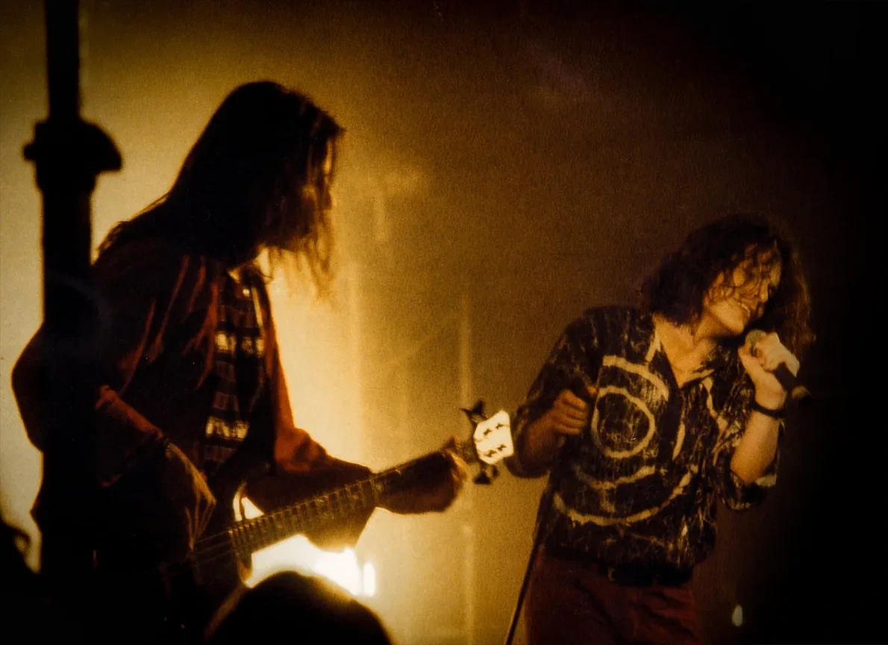
Scaramouche · Archivaufnahme 1990erDie Discografie
Alle drei Studioalben erschienen über Warner Music und erzählen die musikalische Reise von Scaramouche.

1995 · Warner Music
Das Debütalbum. Single des Monats von Warner Music: „Jeans Song". Der Überraschungserfolg, der alles startete.
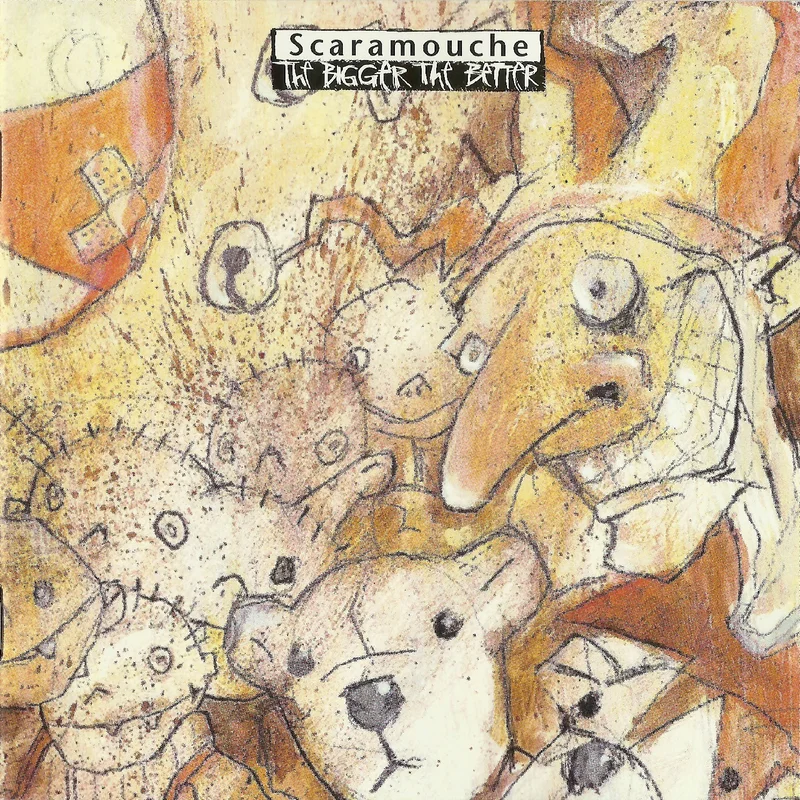
1996 · Warner Music
Das zweite Album. Konzertreisen, Festivalauftritte, Bühne an Bühne mit Deep Purple und den Scorpions.
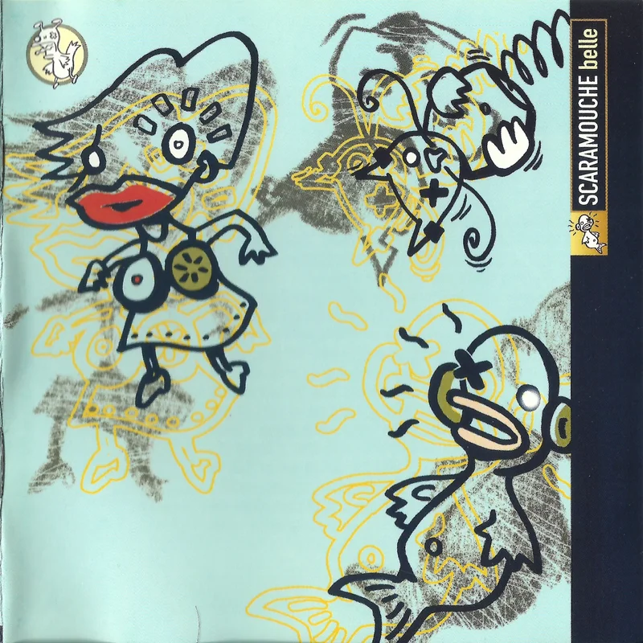
1999 · Warner Music
Das letzte Studioalbum vor der Auflösung. Zwei Jahre später löste sich die Band auf – trotz weiter guter Kritiken.
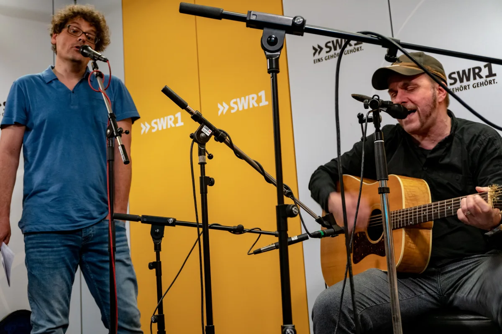
Presse & Auszeichnungen
„Scaramouche kommt auf die Leinwand."SWR1 Baden-Württemberg, 2019 — Prädikat: besonders wertvoll
Auf der Bühne mit
Musik
Live-Aufnahmen vom letzten Konzert im Jazzhaus Freiburg 2001 und Studio-Tracks.
Radio & Interviews
SWR1, Radio OHR – Scaramouche war wieder in aller Munde.
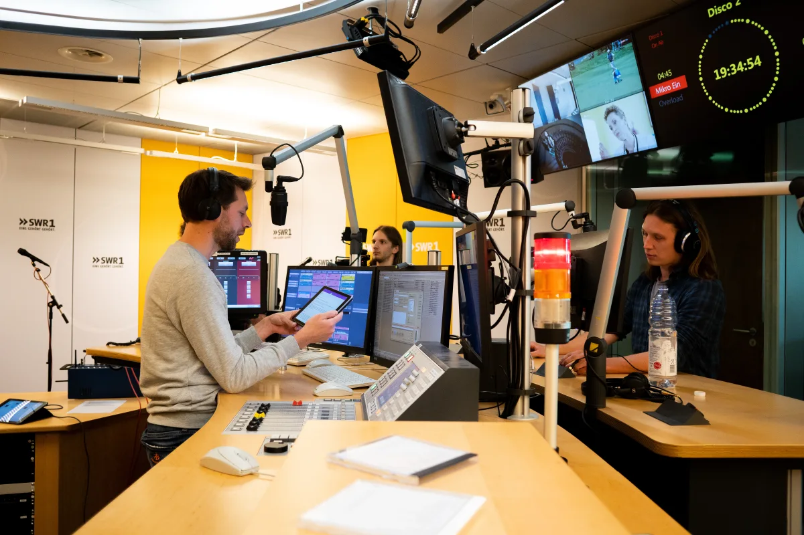
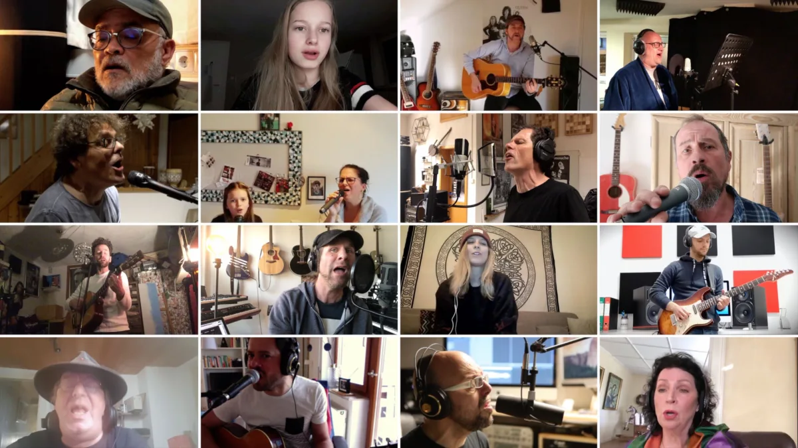
Video auf YouTube ansehen2020 · Project United
Als die Corona-Pandemie die Dreharbeiten stoppte, starteten wir Project United: 70 Musikerinnen und Musiker aus zehn Ländern nahmen gemeinsam den 30 Jahre alten Scaramouche-Song „Side by Side" auf – jede Person in ihrer eigenen Wohnung.
Das Ergebnis wurde zum Zeichen für Zusammenhalt und Hoffnung – und zum Beweis, dass diese Geschichte Menschen weit über Lahr hinaus berührt.
Produktionsstatus
Die Dreharbeiten laufen. Die Kameras stehen wieder, nach allen Unterbrechungen. Wir sind näher am Ziel als je zuvor.
Alle Neuigkeiten zum Filmfortschritt, Drehterminen und der Premiere veröffentlichen wir direkt im Produktionsblog – schaut einfach regelmäßig vorbei.
Zum Blog →Oder folgt uns auf
Jetzt unterstützen
Unabhängige Dokumentarfilme entstehen nicht von alleine. Jeder Beitrag – egal in welcher Höhe – hilft uns, diese Geschichte zu erzählen und zu bewahren. Euer Name erscheint im Abspann.
Via PayPal unterstützenEuer Name erscheint im Abspann · Unterstützer werden auf dieser Website gelistet
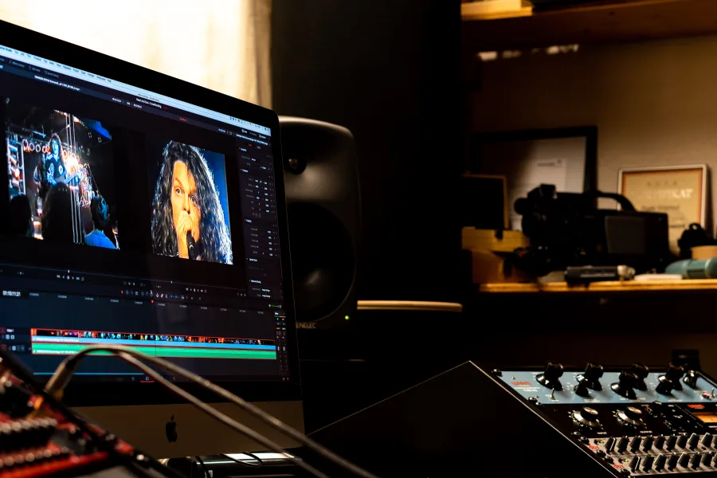
Das Filmteam dankt seinen Unterstützern
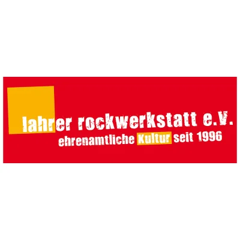
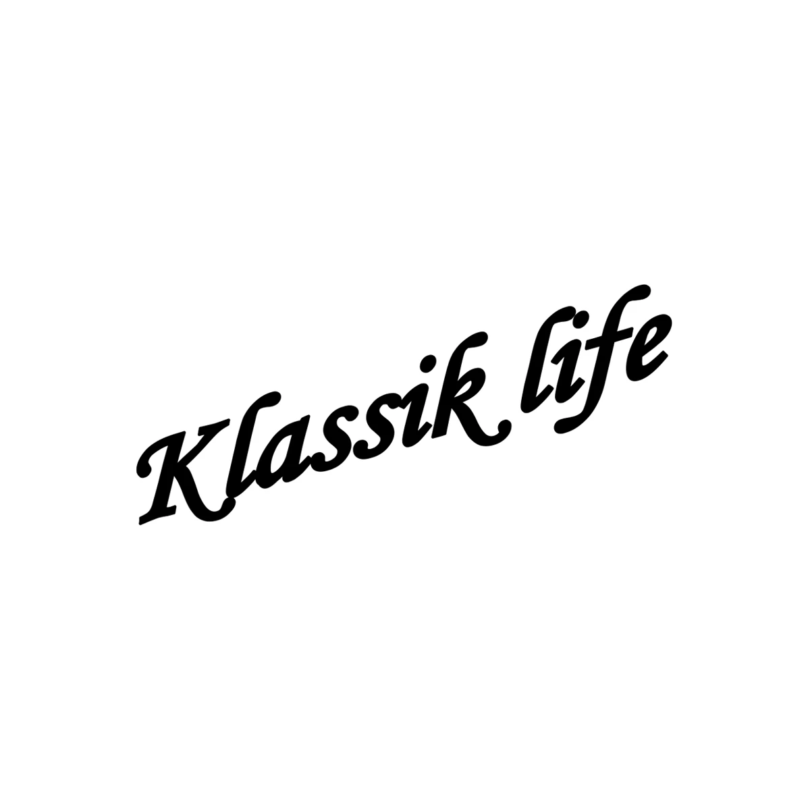
Aus der Produktion

25. Juni 2024 · 2 Min.
Tonbänder im Backofen – ein untrügliches Zeichen dafür, dass Profis am Werk sind. Die Restaurierung des Archivmaterials beginnt.
Beitrag lesen →8. Dez. 2023 · 5 Min.
„Acres Wild waren sowas wie die Popstars von Lahr. Und wir waren halt der Badische Underground." Es gibt Momente als Filmemacher, in…
Beitrag lesen →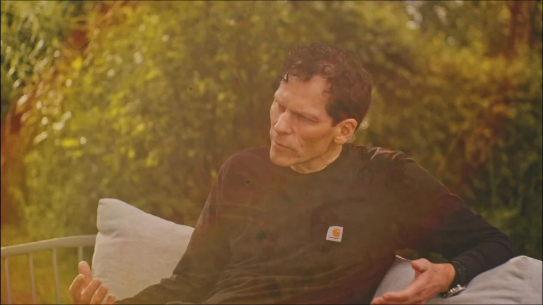
11. Aug. 2023 · 3 Min.
Sommer, Sonne, Nieselregen. So könnte man unsere jüngsten Drehtage zusammenfassen. Die Sommerinterviews sind im Kasten.
Beitrag lesen →Gästebuch
Ihr kennt Scaramouche? Habt ein Konzert besucht, die Alben gehört, erinnert euch an die Lahrer Musikszene der 90er? Schreibt uns – diese Geschichten sind Teil des Films.
Katrin M. · Lahr
„Ich war bei fast jedem Konzert in der Ortenau. Dass jetzt ein Film entsteht, macht mich so glücklich."
Thomas K. · Freiburg
„Jeans Song lief auf meinem ersten Kassettenrecorder. Diese Band hat meine Jugend mitgeprägt."
Das Filmteam
Punchline Studio aus Lahr – Pirmin und Maik Styrnol – produzieren Musik und Filme, die bleiben. Heart and Soul ist ihr persönlichstes Projekt.
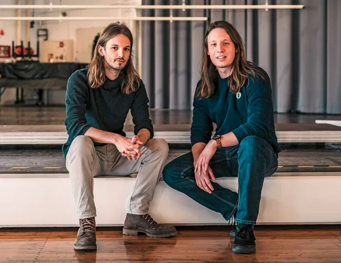
Maik: Kreativdirektion · Ton · Musik · Kamera
Pirmin: Regie · Skript · Color Grading · Sprecher
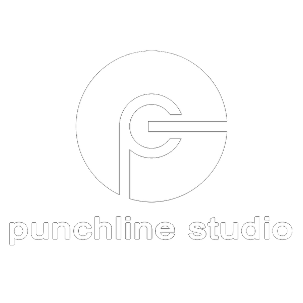
Audioproduktion · Filmproduktion · Lahr